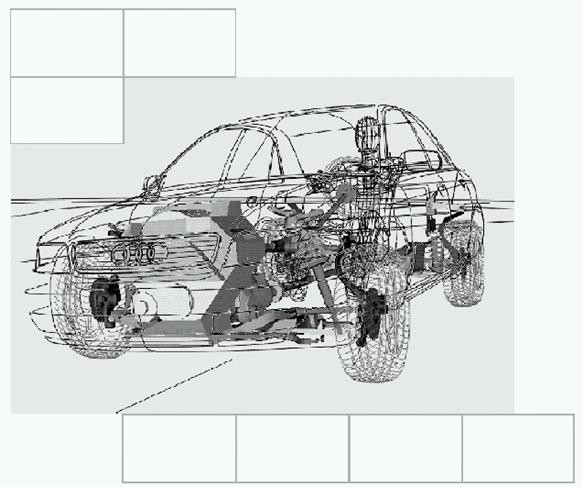
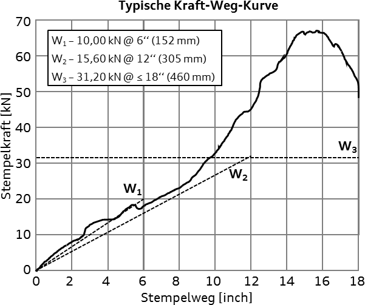
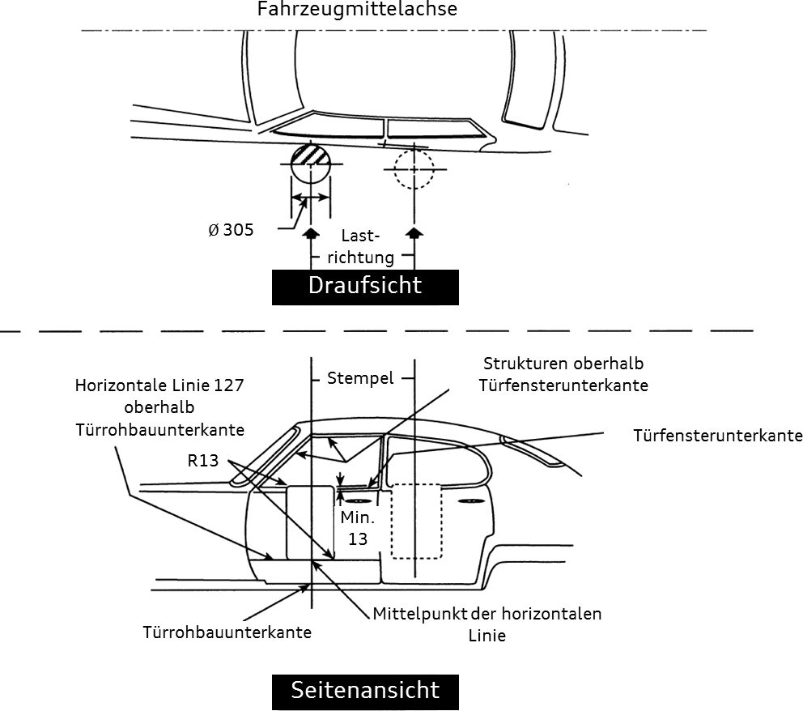

[redacted-co]D[redacted]
Anforderung der Fahrzeugsicherheit an den Türaufprallträger
LAH.DUM.880.KR
Version 20210108
Abstimmung
Vorwort 5[redacted-person] und Verbraucherschutzanforderungen 6Versuche 6Türeindrückung 6Türeindrückung nach GB [redacted-phone]Einzelteilbiegeversuche / Drei-Punkt-Biegeversuch 8Gesamtfahrzeugversuche 10Anhang 11Übersicht gesetzliche Anforderungen weltweit 11[redacted-person] Eindrückwiderstände 12[redacted-person] Türeindrückung 13
[redacted-person] beschreibt Leistungen, Anforderungen sowie Prüf- und Erprobungsbedin- gungen an den Türaufprallträger und an das Gesamtfahrzeug, die das Produkt bei Abschluss der Entwicklung erfüllen muss und ist eine Ergänzung der bestehenden Lastenhefte (s.[redacted-person] samtlastenheft Fahrzeugsicherheit).
Inhalte der Lastenhefte dürfen Dritten ohne ausdrückliche Genehmigung durch die [redacted-co] nicht zugänglich gemacht werden.
Grundsätzlich sind als Entwicklungsziel alle gesetzlichen Grenzwerte sowie alle Anfor- derungen bzgl. Selbstverpflichtung mit einer 20%-igen Sicherheit zu erfüllen.
Dies dient der Absicherung von Produktionsschwankungen (bzgl. Verbindungstechnik, Materi- algüte, Materialstärke) sowie Versuchsstreuungen und gewährleistet eine sichere Erfüllung aller Anforderungen (Gesetz, Selbstverpflichtung, Verbraucherschutz) in der Serienfertigung über die gesamte Laufzeit.
Abweichungen vom Entwicklungsziel sind im Einzelfall bei Nachweis einer entsprechend notwendigen Prozessgüte und serienbegleitender Qualitätsprüfungen im Herstellungs- prozess möglich, erfordern jedoch zwingend die Genehmigung durch die Fahrzeugsi- cherheit unter Einbeziehung der zuständigen Qualitätssicherungsabteilungen.
[redacted-person] gilt sowohl für den vorderen als auch den hinteren Türaufprallträger.
Die gesetzlichen Grundlagen bzw. die Verbraucherschutzanforderungen können aus dem Ge- samtfahrzeuglastenheft entnommen werden.
Der TAT muss alle unter Kapitel 3 genannten Anforderungen in den Versuchen (Türein- drückung, 3-Punkt-Biegeversuch und Gesamtfahrzeug-Crash) erfüllen.
Entwicklungsziel: Ein komplettes Versagen des Türlastpfades soll vermieden werden. Freigabe des Bauteils erfolgt nur bei Erfüllung aller Anforderungen.
Basis für erforderliche Mindestanforderungen des TAT ist das Erfüllen der gesetzlichen Anfor- derungen W1, W2 und W3 (anfänglicher-, mittlerer- und Spitzen-Eindrückwiderstand, vgl. auch 4.2) für die schwerste Variante dieses Fahrzeugtyps.
[redacted-person] der Eindrückwiderstände müssen länderspezifisch sicher erreicht werden.
Türeindrückversuche sind grundsätzlich ohne Sitze durchzuführen. Abweichungen benötigen der Bestätigung der bearbeitenden Fachabteilung [redacted-co].
[redacted-person] müssen simulativ mit einer Stempelverschiebung um +2 mm in z-Rich- tung bestätigt werden.
Eindrückgeschwindigkeit – soweit nicht anders vereinbart – beträgt v = 5 mm/s.
[redacted-person]- und Vorversuche ist das Türschloss im unverriegelten Zustand, für Freigabe- versuche sind die Seitentüren zu verriegeln.
|
|
|
|---|---|---|
|
|
|
* jeweils der geringere Wert ist für die Erfüllung relevant.
Prinzipskizze, 3-Punkt-Biegeversuch
l/4
Durchzuführen beim Lieferanten/Entwickler
Abgeleitet aus dem Türeindrückversuch nach GB 15743 werden Grenzwerte des Kraft- Weg-Verlaufs für den TAT von [redacted-co] vorgegeben, und deren Einhaltung ist in nachfolgend aufgezeigtem Biegeversuch einzuhalten.
Randbedingungen:
Prüfkörper: Stempel oder Halbzylinder mit Durchmesser D = 305 mm.
Stempelgeschwindigkeit: 4 mm/s < v < 12 mm/s.
die Stützweite wird anhand der Türeinbausituation festgelegt.
schematische Darstellung TAT
Kriterien:
[redacted-person] oder Reißen des TAT bis zu dem Intrusionsweg sI = l/4.
Für l/30 ≤ sI ≤ l/15 gilt: FR ≥ 5 kN (FR: Reaktionskraft:= Stempelkraft).
Versuchsdurchführung und –dokumentation bis Bauteilversagen, [redacted-person] zu Lagerpunkten oder dem vorgegebenem Intrusionsweg + 20% Sicherheit.
[redacted-person] dienen zur Auslegung in frühen Projektphasen. [redacted-person] und Anforderungen sind im fortgeschrittenen Projektverlauf auf Basis validierter Simulatio- nen mit der zuständigen Fachabteilung ([redacted-id]) abzustimmen.
[redacted-person]:
Versuchsaufbau:
[redacted-person] müssen mit Aufnahmeklötzen verschraubt und entsprechend der Prinzips- kizze auf dem Führungsschlitten gelagert werden.
[redacted-person] muss nach Prinzipskizze durch den nach GB 15743 genormten Druckkörper auf Biegung belastet werden.
Während des Biegeversuchs darf der Aufprallträger mit den verschraubten Aufnahmeklötzen die Führungsschlitten nur an den definierten Auflagestellen berühren.
Abmessungen und Material der Aufnahmeklötze sind den Randbedingungen des Ge- samtfahrzeuges anzupassen, und müssen mit der Fachabteilung abgestimmt werden.
[redacted-person] ermittelt in eigenen Versuchsreihen mit hoher Stückzahl das Toleranzband für F = f(s). [redacted-person] ist möglichst gering zu halten, um sicherzustellen, dass auch TAT der Unter- und Obergrenze die Anforderungen - OHNE separate Untersuchungen - erfüllen.
[redacted-person] ist für jede neue Baustufe im Projekt erneut und frühzeitig abzuarbei- ten.
Anforderungen an die durchzuführenden Versuche bei [redacted-co]:
Für die Auslösung der Rückhaltesysteme für Seitenschutz ist ein frühzeitiges Plausibilisierungssignal notwendig. Dazu muss die TAT-Auslegung (Überlappung zu Lastpfaden, [redacted-person]…) ggf. mit der Abteilung für Crashsensorik abgestimmt werden.
|
|
|
||||||||
|---|---|---|---|---|---|---|---|---|---|---|
Widerstandskraft [kN] |
Faktor [Faktor x m x g] |
|
Widerstandskraft [kN] |
Faktor [Faktor x m x g] |
|
|
Faktor [Faktor x m x g] |
|
||
| FMVSS 214S | ohne Sitze | 10,000 | - | 152 | 15,569 | - | 305 | 31,138 | 2,00 | 457 |
| FMVSS 214S | mit Sitze | 10,000 | - | 152 | 19,460 | - | 305 | 53,378 | 3,50 | 457 |
| CMVSS 214 | ohne Sitze | 10,000 | - | 152 | 15,569 | - | 305 | 31,138 | 2,00 | 457 |
| CMVSS 214 | mit Sitze | 10,000 | - | 152 | 19,460 | - | 305 | 53,378 | 3,50 | 457 |
| KMVSS Art. 104 | ohne Sitze | 10,006 | 0,83 | 155 | 15,000 | 1,30 | 310 | 30,400 | 2,00 | 460 |
| KMVSS Art. 104 | mit Sitze | 10,006 | 0,83 | 155 | 19,424 | 1,63 | 310 | 55,378 | 3,50 | 460 |
| ADR29/00 | ohne Sitze | 10,000 | 0,83 | 155 | 15,500 | 1,30 | 310 | 31,000 | 2,00 | 460 |
| ADR29/00 | mit Sitze | 10,000 | 0,83 | 155 | 19,440 | 1,63 | 310 | 55,330 | 3,50 | 460 |
| GB [redacted-phone] | ohne Sitze | 10,000 | - | 152 | 15,560 | - | 305 | 31,120 | 2,00 | 457 |
| GB [redacted-phone] | mit Sitze | 10,000 | - | 152 | 19,450 | - | 305 | 53,340 | 3,50 | 457 |
| GS 38A | ohne Sitze | 10,006 | - | 150 ± 5 | 15,598 | - | 300 ± 5 | 31,147 | 2,00 | 460 ± 5 |
| GS 38A | mit Sitze | 10,006 | - | 150 ± 5 | 19,473 | - | 300 ± 5 | 53,416 | 3,50 | 460 ± 5 |
| IS 12009:1995 | mit Sitze | 10,000 | 0,60 | 150 | 20,000 | 1,20 | 300 | 55,000 | 2,00 | 450 |
FMVSS 214S [redacted-person] CMVSS 214 Kanada
KMVSS Art. 104 Korea ADR 29/00 Australien
GB 15743 China
GS 38A Golfstaaten
IS 12009 Indien
[redacted-person] anhand Beispiel:
[redacted-person] W1: 𝑊1
= 1/𝑠1
∙ ∫𝑠1 𝐹 ∙ d𝑠
0
[redacted-person] W2: 𝑊2
= 1/𝑠2
∙ ∫𝑠2 𝐹 ∙ d𝑠
0
Spitzeneindrückwiderstand W3: 𝑊3(0 < 𝑠 < 𝑠max) = 𝐹max
(engl. minimum peak crush resistance)

[redacted-person]-Weg-Kurve mit Eindrückwiderständen W1, W2 und W3 anhand der der gesetz- lichen Vorgaben FMVSS 214S mit den Stempelwegen s1 = 6‘‘, s2 = 12‘‘ und smax ≤ 18‘‘.
[redacted-person] anhand FMVSS 214S:

[redacted-person] in [mm].